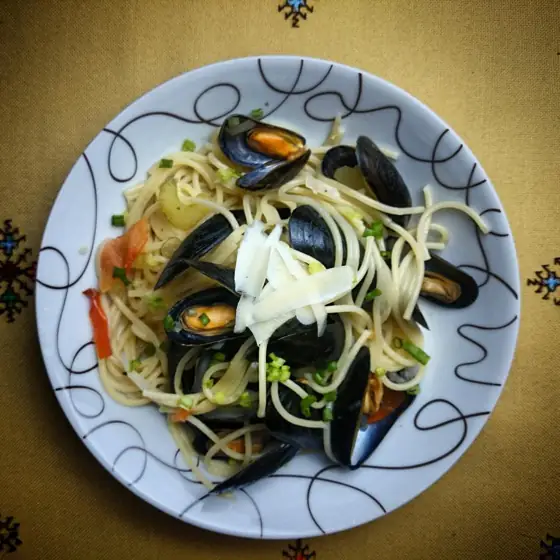
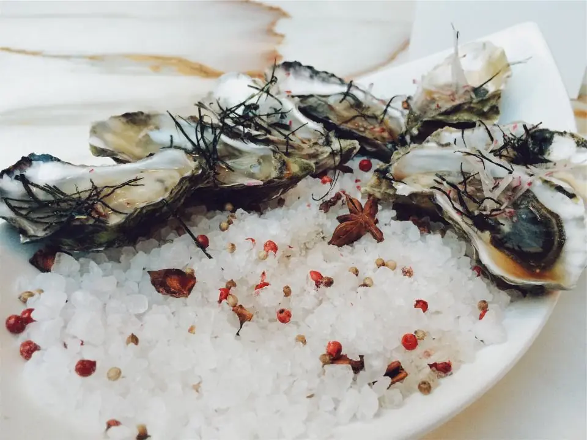
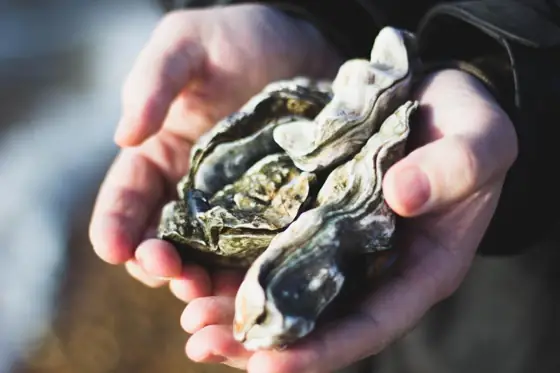
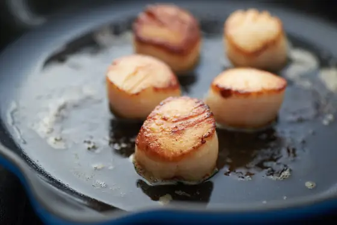
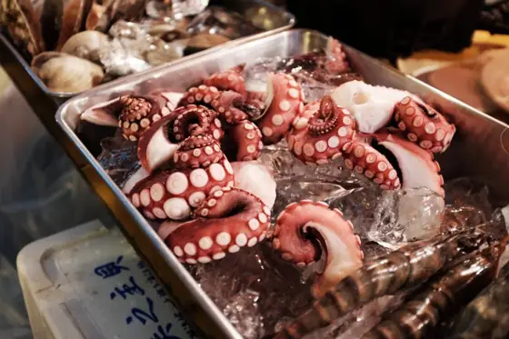
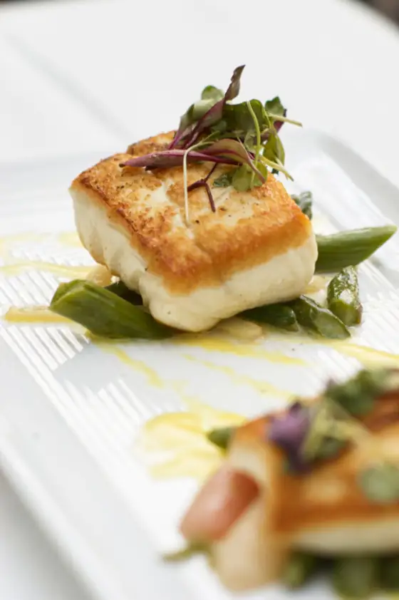
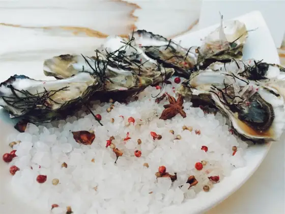
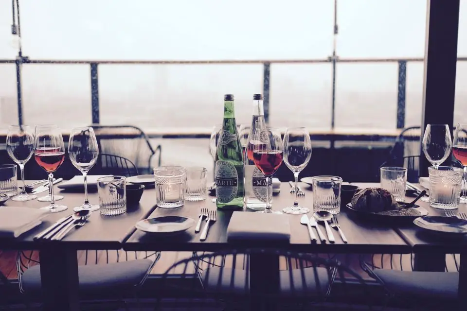

0 m · Orilla
Algas y piedra
Cochayuyo crocante, luche ahumado y caldo de piedras de la caleta. El primer bocado sabe a marea baja.


Valparaíso, Chile — desde 2016
Menú de otoño 2026
En nuestra mesa el océano se recorre de la orilla al abismo: cada plato nace de una profundidad distinta y de las caletas que la pescan.
Trabajamos con siete caletas artesanales entre Quintay y Horcón. El menú cambia con la temporada y con lo que el mar decide traer cada mañana.
0 m · Orilla
Cochayuyo crocante, luche ahumado y caldo de piedras de la caleta. El primer bocado sabe a marea baja.

8 m · Roquerío
Lo que vive pegado a la roca: erizo con mantequilla tostada y picoroco al vapor de su propia agua.

30 m · Bosque de huiro
Vieira sellada, leche de tigre de rica rica y aceite de cilantro. Fresco, verde, eléctrico.

80 m · Fondo de arena
Pulpo cocinado doce horas, papa chilota morada y pebre de ají cacho de cabra.

150 m · Talud
Congrio a la brasa de espino, caldillo concentrado y hojas de borraja. Un homenaje al poeta del puerto.

200 m · Abismo
Postre de tinta de jibia, chocolate de Puerto Natales y flor de sal de Cáhuil. El final más oscuro del menú.

Menú Marea
12 tiempos
Unas tres horas en el salón principal. Opción vegetariana de algas y huerta con 72 h de aviso.
$145.000 CLP por persona
Barra del pescador
7 tiempos
Frente a la cocina abierta, sin reserva los jueves y viernes desde las 19:00.
$85.000 CLP por persona
Maridaje
Vinos del valle
Casablanca, San Antonio e Itata. También hay maridaje sin alcohol con fermentos de la casa.
$68.000 CLP por persona
Precios de ejemplo

La chef Antonia Lazo y el pescador Ramón Ibacache abrieron Marea en una antigua bodega del cerro Alegre. Diez años después, el restaurante sigue teniendo una sola regla: si no salió del mar esta mañana, no está en el menú.
“Una cena que se recuerda como un viaje.”Revista de ejemplo